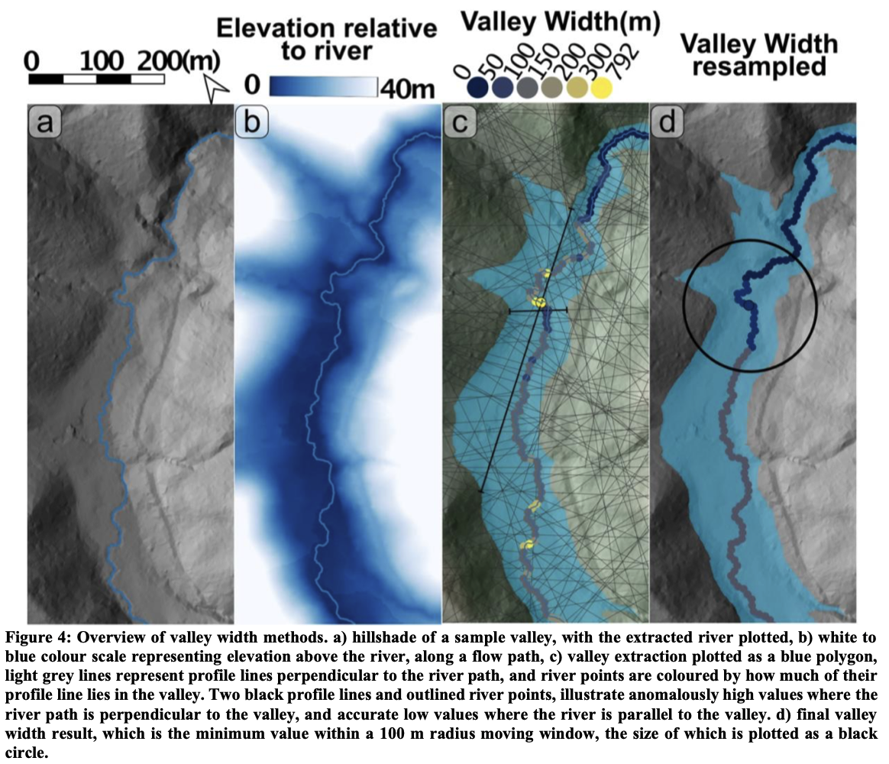

pyValleyWidth
pyValleyWidth measures valley width from a digital terrain model. It is built on pytopotoolbox, the Python port of TopoToolbox. The approach follows Paul Morgan’s ElevationThresholdValleyWidth workflow, first written in MATLAB for TopoToolbox 2.
The code is under active development. It has not been peer-reviewed or fully validated. Use it with caution. If you use the original threshold method, cite Morgan, P. M., Grant, A., Struble, W., LaHusen, S., and Duvall, A. (2026) The damability function: a probabilistic approach to regional landslide dam susceptibility analysis applied to the Oregon Coast Range, USA. Natural Hazards and Earth System Sciences, 26, 1745–1766, https://doi.org/10.5194/nhess-26-1745-2026. Cite TopoToolbox or pytopotoolbox as well when the routing comes from there.
What is in the repository
- An importable package: valley classification, swath widths, an optional variable rim, smoothing along the stream network, the normalized steepness index ksn, and river-profile figures.
valley_width_example.ipynb, an end-to-end run on the Big Tujunga DEM shipped with TopoToolbox. It routes flow, can mask to the largest catchment, measures width two ways, and draws maps, ksn, longitudinal and chi–elevation profiles, and threshold or excess topography. The notebook is the user guide, including notes on stream area, the HAND threshold, swath spacing, smoothing, and saturated transects.- The method figure at the top of this page.
Method
Width comes from height above the channel network, a valley polygon, and cross-stream swaths. A profile perpendicular to the channel can overestimate width on a tight bend, so the workflow can resample and smooth widths along the network with a moving window. A variable-rim mode is also available: each transect is clipped to the local divides, and the rim is picked from a sweep of how width changes with the height threshold.
Pipeline
- Terrain and streams. Flow routing and stream extraction with pytopotoolbox. An optional mask keeps the largest connected catchment, so later steps use one basin.
- Valley mask, two choices inside
dem2widths. A constant HAND threshold treats every cell below a fixed height above the nearest stream as valley, and returns widths and that height field. The variable-rim mode clips each transect to the local drainage divides, sweeps the HAND threshold upward, and takes the last qualifying peak in dW/dT between a noise floor (min_dwdt) and a divide-scale ceiling (max_dwdt). Those per-transect thresholds are lifted onto the stream nodes, smoothed with a rolling median, and passed to the same flood fill. That mode also returns a valley depth.plot_transect_diagnosticdraws one transect (map, HAND profile, and the dW/dT sweep) so the two thresholds can be chosen by eye. - Widths from swaths. Cross-stream profiles on the valley raster, with an optional filter when a transect is too short to be trusted.
- Widths on the network. Raw widths at the sample points, then a gap-filled, vertex-averaged, Gaussian-smoothed field (
smooth_valley_width_on_stream_network). - Add-ons in the example notebook. ksn from a slope–area fit with fixed concavity, longitudinal and chi–elevation profiles with the trunk highlighted, a trunk profile that pairs width with valley-top height in the variable-rim mode, and threshold or excess topography at a chosen slope (35° in the example).
Installation
- Make a conda or virtual environment with
topotoolboxinstalled, and use that environment as the Jupyter kernel. - Place the
pyValleyWidthpackage folder next to the notebooks, or add it toPYTHONPATH. - Open
valley_width_example.ipynband run it from top to bottom. - For another terrain model, copy those sections and change stream area, the elevation threshold or the variable-rim settings, swath spacing, the minimum radius, and the swath length.
from pyValleyWidth import dem2widthsPackage pieces
dem2widthsruns routing, drops short streams, builds the valley mask, measures swaths, and returns drainage area and gradient at the width samples.valleyclass_elev,swath_width, andpeak_valley_widthbuild the mask and find the rim in the variable-threshold mode.plot_transect_diagnosticis the three-panel check at one map point.stream_utilsdrops short streams and builds the swath geometry.valley_width_streamflattens stream coordinates, smooths width on the network, and orders samples along the trunk.ksn_analysishandles the slope–area fit, ksn, smoothing, and filling empty values along streams.river_profile_plotsdraws the longitudinal profile, the chi–elevation profile, the paired ksn and valley-width panels, and the threshold and excess-topography figures.